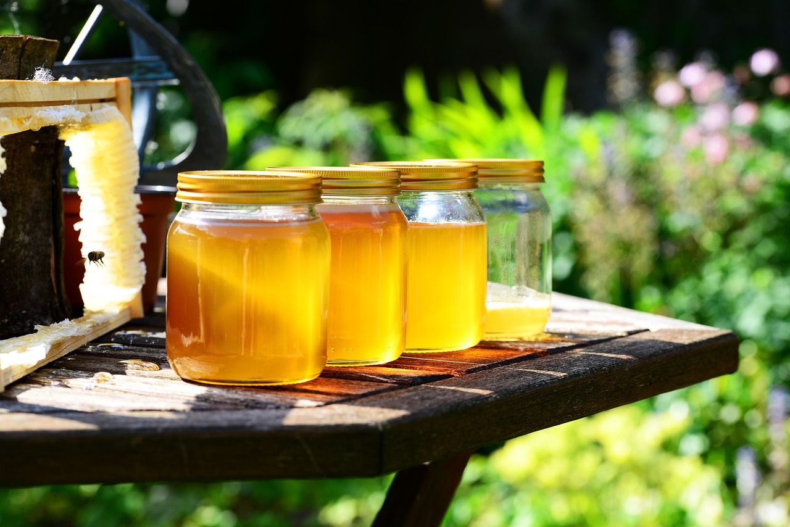

Cách phân biệt mật ong thật giả tại nhà: thử được gì, không thử được gì
Mật ong giả pha đường, pha siro bán tràn lan, nên ai cũng muốn có cách thử nhanh tại nhà. Vấn đề là hầu hết các phép thử lan truyền trên mạng đều không kết luận được gì chắc chắn. Bài này nói rõ từng phép thử làm được gì, không làm được gì, và cách chọn mật ong chắc chắn nhất — để bạn không mất tiền oan vì tin vào một phép thử sai.
Thử tan trong nước: chỉ tham khảo
Cách làm: cho một thìa mật ong vào ly nước nguội sạch. Mật ong thật thường đặc, nặng, chìm thành khối rồi tan chậm. Mật pha nhiều đường và chất tạo ngọt thường loãng hơn, tan nhanh và hòa lẫn vào nước.
Nghe có vẻ phân biệt rạch ròi, nhưng thực tế không phải vậy. Độ tan phụ thuộc vào độ đặc, độ ẩm và loại hoa của mật, mà những thứ này thay đổi tự nhiên theo từng loại mật và từng mẻ thu hoạch. Mật pha siro tinh vi cũng có thể chìm thành khối như mật thật. Ngược lại, mật thật loãng (do độ ẩm cao tự nhiên) cũng có thể tan nhanh hơn bình thường. Vì vậy phép thử này chỉ cho một gợi ý ban đầu, không phải kết luận.
Thử giấy thấm và que diêm: cũng chỉ tham khảo
Thử giấy thấm: nhỏ một giọt mật lên giấy thấm hoặc giấy ăn. Mật thật thường giữ dạng giọt lâu vì độ nhớt cao và ít nước. Mật nhiều nước sẽ loang ra và thấm ướt giấy nhanh.
Thử que diêm: nhúng đầu que diêm vào mật rồi quẹt thử. Mật thật ít nước thì diêm bắt lửa bình thường. Mật nhiều nước làm ẩm đầu diêm, khó bắt lửa.
Cả hai phép thử này thực chất chỉ đo độ ẩm và độ nhớt, không đo độ thật giả. Mật thật có độ ẩm cao vẫn loang giấy và làm diêm khó cháy. Mật pha siro được nấu đặc vẫn giữ giọt tốt và bắt lửa bình thường. Nói cách khác: mật thật có thể trượt các phép thử này, mật giả có thể đậu.
Kết tinh: hiện tượng tự nhiên, nhưng không phải bằng chứng
Nhiều người tin rằng mật kết tinh là mật thật, mật mãi không kết tinh là mật giả. Sự thật nằm ở giữa.
Theo National Honey Board, kết tinh là quá trình tự nhiên của mật ong: đường glucose trong mật tách ra khỏi nước và tạo thành tinh thể. Mật thật, ít qua xử lý thường kết tinh theo thời gian, và kết tinh không làm mật hỏng hay mất an toàn. Vì vậy thấy mật kết tinh thì đừng vội vứt đi — đó là hiện tượng bình thường.
Nhưng kết tinh không phải là bằng chứng chắc chắn cho độ thật. Một số loại mật thật kết tinh rất chậm (tùy loại hoa và tỉ lệ đường), có thể giữ dạng lỏng hàng tháng. Ngược lại, mật pha đường cũng có thể kết tinh vì đường vốn dễ tạo tinh thể. Dàn ý ban đầu của bài này từng viết kết tinh là "dấu hiệu của mật thật" — sau khi đối chiếu thêm, phải sửa lại cho đúng: kết tinh là hiện tượng tự nhiên thường gặp ở mật thật, nhưng không dùng nó để kết luận thật giả được.
Cách chọn chắc nhất
Vì không phép thử tại nhà nào kết luận được, cách chắc chắn nhất nằm ở khâu chọn mua:
- Đọc nhãn mác. Tránh sản phẩm ghi thành phần có đường, glucose hay siro bổ sung. Mật ong thật chỉ có một thành phần là mật ong.
- Nguồn gốc rõ ràng. Ưu tiên mua trực tiếp từ người nuôi ong hoặc đơn vị minh bạch được nguồn gốc, vùng thu hoạch, quy trình khai thác. Khi bạn biết mật từ đâu ra và ai chịu trách nhiệm, bạn không cần thử gì cả.
- Giá quá rẻ thì nên nghi ngờ. Mật ong thật tốn công nuôi và khai thác, nên giá quá thấp so với mặt bằng chung là dấu hiệu đáng ngờ.
- Chỉ phân tích phòng lab mới kết luận chắc chắn. Các phương pháp như xét nghiệm hồ sơ đường, phân tích cộng hưởng từ hạt nhân (NMR) hay phân tích phấn hoa mới phát hiện được đường ngoại lai và xác định nguồn gốc. Những phương pháp này đắt và không dành cho người tiêu dùng lẻ, nhưng đó là lý do vì sao mua từ nguồn tin cậy quan trọng hơn tự thử tại nhà.

Kết luận thẳng
Không có phép thử tại nhà nào — thử nước, giấy thấm, que diêm, kết tinh — chứng minh được một chai mật là thật hay giả. Chúng chỉ đo độ ẩm, độ nhớt và tính chất vật lý vốn thay đổi tự nhiên theo từng loại mật. Mật thật có thể trượt, mật giả có thể đậu. Muốn chắc, hãy dựa vào nhãn mác, nguồn gốc rõ ràng và người bán tin cậy.
Giới hạn và an toàn
- Bài này không đưa bất kỳ tuyên bố chữa bệnh nào về mật ong. Mật ong là thực phẩm, không phải thuốc.
- Tuyệt đối không cho trẻ dưới 12 tháng dùng mật ong ở bất kỳ dạng nào. CDC (Mỹ) khuyến cáo rõ: mật ong có thể gây ngộ độc botulinum nặng ở trẻ dưới 12 tháng, kể cả khi pha vào thức ăn, nước uống, sữa công thức hay núm vú.
- Pha mật ong với nước ấm, không dùng nước sôi.
- Người bị tiểu đường hoặc dị ứng phấn hoa cần thận trọng khi dùng mật ong và nên hỏi ý kiến bác sĩ nếu không chắc chắn.
Nguồn tham khảo
Nguồn uy tín (làm căn cứ cho bài): - CDC (Mỹ) — khuyến cáo không cho trẻ dưới 12 tháng dùng mật ong vì nguy cơ ngộ độc botulinum. - National Honey Board — kết tinh là quá trình tự nhiên của mật ong, không ảnh hưởng đến chất lượng và an toàn. - VIHEMA (Cục Quản lý môi trường y tế) — mật ong kết tinh là hiện tượng tự nhiên, không phải mật hỏng. - Tài liệu phân tích về kiểm nghiệm mật ong — chỉ phân tích phòng lab (hồ sơ đường, NMR, phân tích phấn hoa) mới kết luận được độ thật giả; các phép thử tại nhà chỉ đo độ ẩm, độ nhớt và tính chất vật lý.
Chỉ tham khảo (lấy ý tưởng, không lấy làm căn cứ): - Blog sức khỏe, trang nội dung về phân biệt mật ong thật giả (các phép thử nước, giấy thấm, que diêm — bài chỉ trình bày ở mức sàng lọc ban đầu, không lấy làm kết luận).
Nội dung chỉ mang tính tham khảo. Với các việc liên quan đến điện, gas, hóa chất và sức khỏe, hãy ưu tiên an toàn và hỏi ý kiến chuyên gia khi cần.
💬 Bình luận
Đang tải bình luận…